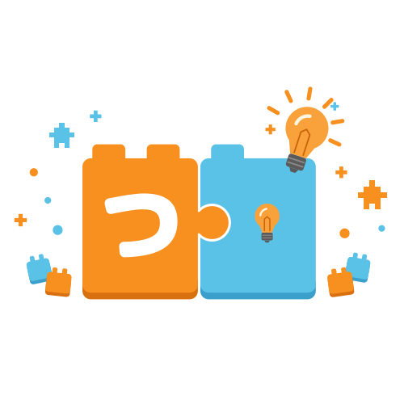

つかプロ
ロボットと つなぐ
1
ブロックを ならべて、とろう
この なかに、うえから じゅんばんに
よんでいるよ…
とる
くろい かみの うえに、しろい ブロックを ならべてね
もういちど
しゃしんを えらぶ
2
あっているか たしかめよう
＋ ふやす
ぜんぶ けす
3
うごかそう
うごかす
とめる
どの ブロック？
この ブロックを けす
とじる
せんせい用の せってい
1つの ブロックで うごく 時間です。ロボットに 毎回 送るので、ロボットの プログラムを 書きなおさなくても かわります。
まえ
うしろ
みぎ
ひだり
あいだ
カメラ
明るさを 自動で 決める
しきい値
ブロックが まわりより 暗い（白い 机の とき）
読み取った 白黒の 図を 見る
音を 鳴らす
はじめの 値に もどす
とじる